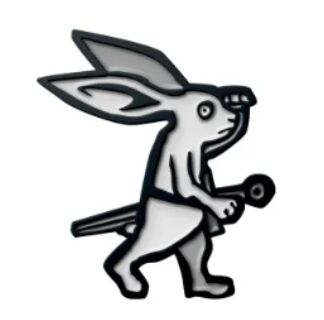

Scribing...
Hic Sunt Dracones
Could not fetch the manuscript. Ensure you are running this via a local server (http), not file://.
Error:

≡'); }" class="w-full h-full object-cover opacity-80 group-hover:opacity-100">Scribing...
Could not fetch the manuscript. Ensure you are running this via a local server (http), not file://.
Error: